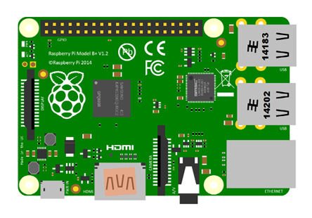

an open-source framework for connecting sensors to the internet
Program the real world
instead of running in a datacenter
with any
Arduino

- Connect really cheap and effective sensors
- Run everything at the same time with no delay
- Do it fast in microsecond response times
Bring it to the internet
while running in the real-world
with the
Raspberry Pi

- Stream live data to and from the Arduino
- Store and process lots of data efficiently
- Provide control from a single-page web app